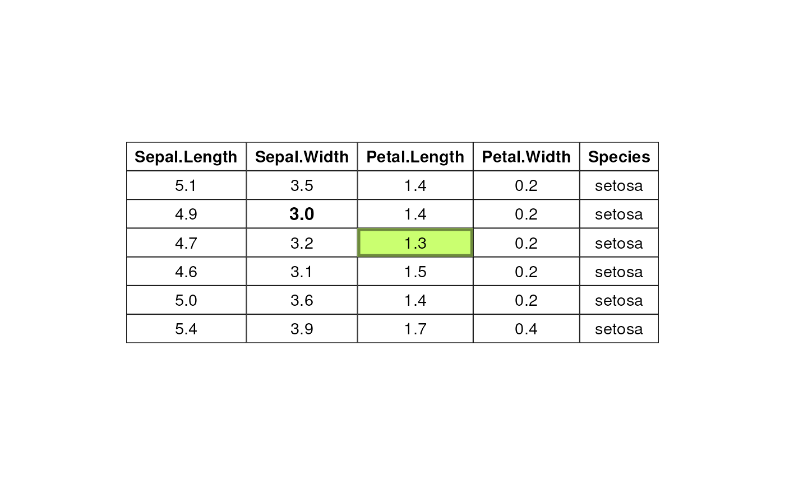
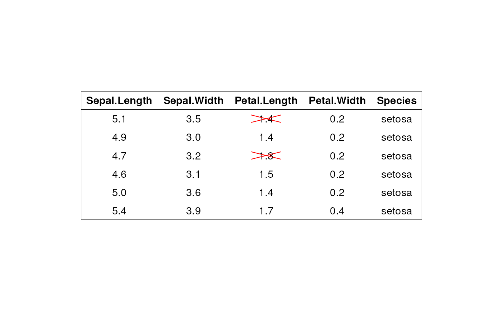

Draw a textual table.
ggtexttable(): draw a textual table.ttheme(): customize table theme.rownames_style(), colnames_style(), tbody_style(): helper functions to customize the table row names, column names and body.table_cell_font(): access to a table cell for changing the text font (size and face).table_cell_bg(): access to a table cell for changing the background (fill, color, linewidth).tab_cell_crossout(): cross out a table cell.tab_ncol(), tab_nrow(): returns, respectively, the number of columns and rows in a ggtexttable.tab_add_hline(): Creates horizontal lines or separators at the top or the bottom side of a given specified row.tab_add_vline(): Creates vertical lines or separators at the right or the left side of a given specified column.tab_add_border(), tbody_add_border(), thead_add_border(): Add borders to table; tbody is for table body and thead is for table head.tab_add_title(),tab_add_footnote(): Add title, subtitle and footnote to a table.
ggtexttable( x, rows = rownames(x), cols = colnames(x), vp = NULL, theme = ttheme(), ... ) ttheme( base_style = "default", base_size = 11, base_colour = "black", padding = unit(c(4, 4), "mm"), colnames.style = colnames_style(size = base_size), rownames.style = rownames_style(size = base_size), tbody.style = tbody_style(size = base_size) ) colnames_style( color = "black", face = "bold", size = 12, fill = "grey80", linewidth = 1, linecolor = "white", parse = FALSE, ... ) rownames_style( color = "black", face = "italic", size = 12, fill = NA, linewidth = 1, linecolor = "white", parse = FALSE, ... ) tbody_style( color = "black", face = "plain", size = 12, fill = c("grey95", "grey90"), linewidth = 1, linecolor = "white", parse = FALSE, ... ) table_cell_font(tab, row, column, face = NULL, size = NULL, color = NULL) table_cell_bg( tab, row, column, fill = NULL, color = NULL, linewidth = NULL, alpha = NULL ) tab_cell_crossout( tab, row, column, linetype = 1, linewidth = 1, linecolor = "black", reduce.size.by = 0 ) tab_ncol(tab) tab_nrow(tab) tab_add_hline( tab, at.row = 2:tab_nrow(tab), row.side = c("bottom", "top"), from.column = 1, to.column = tab_ncol(tab), linetype = 1, linewidth = 1, linecolor = "black" ) tab_add_vline( tab, at.column = 2:tab_ncol(tab), column.side = c("left", "right"), from.row = 1, to.row = tab_nrow(tab), linetype = 1, linewidth = 1, linecolor = "black" ) tab_add_border( tab, from.row = 2, to.row = tab_nrow(tab), from.column = 1, to.column = tab_ncol(tab), linetype = 1, linewidth = 1, linecolor = "black" ) tbody_add_border( tab, from.row = 2, to.row = tab_nrow(tab), from.column = 1, to.column = tab_ncol(tab), linetype = 1, linewidth = 1, linecolor = "black" ) thead_add_border( tab, from.row = 1, to.row = 1, from.column = 1, to.column = tab_ncol(tab), linetype = 1, linewidth = 1, linecolor = "black" ) tab_add_title( tab, text, face = NULL, size = NULL, color = NULL, family = NULL, padding = unit(1.5, "line"), just = "left", hjust = NULL, vjust = NULL ) tab_add_footnote( tab, text, face = NULL, size = NULL, color = NULL, family = NULL, padding = unit(1.5, "line"), just = "right", hjust = NULL, vjust = NULL )
Arguments
| x | a |
|---|---|
| rows | optional vector to specify row names |
| cols | optional vector to specify column names |
| vp | optional viewport |
| theme | a list, as returned by the function |
| ... | extra parameters for text justification, e.g.: hjust and x. Default
is "centre" for the body and header, and "right" for the row names. Left
justification: |
| base_style | character string the table style/theme. The available themes
are illustrated in the
ggtexttable-theme.pdf
file. Allowed values include one of |
| base_size | default font size |
| base_colour | default font colour |
| padding | length-2 unit vector specifying the horizontal and vertical padding of text within each cell |
| colnames.style | a list, as returned by the function
|
| rownames.style | a list, as returned by the function
|
| tbody.style | a list, as returned by the function |
| color, face, size | text font color, face and size, respectively. Allowed values for face include c("plain", "bold", "italic", "bold.italic"). |
| fill | background color. |
| linewidth, linecolor | line width and color, respectively. |
| parse | logical, default behaviour for parsing text as plotmath |
| tab | an object from |
| row, column | an integer specifying the row and the column numbers for the cell of interest. |
| alpha | numeric value specifying fill color transparency. Value should be in [0, 1], where 0 is full transparency and 1 is no transparency. |
| linetype | line type |
| reduce.size.by | Numeric value in [0, 1] to reduce the size by. |
| at.row | a numeric vector of row indexes; for example |
| row.side | row side to which the horinzotal line should be added. Can be one of |
| from.column | integer indicating the column from which to start drawing the horizontal line. |
| to.column | integer indicating the column to which the horizontal line should end. |
| at.column | a numeric vector of column indexes; for example |
| column.side | column side to which the vertical line should be added. Can be one of |
| from.row | integer indicating the row from which to start drawing the horizontal line. |
| to.row | integer indicating the row to which the vertical line should end. |
| text | text to be added as title or footnote. |
| family | font family |
| just | The justification of the text relative to its (x, y) location. If there are two values, the first value specifies horizontal justification and the second value specifies vertical justification. Possible string values are: "left", "right", "centre", "center", "bottom", and "top". For numeric values, 0 means left (bottom) alignment and 1 means right (top) alignment. |
| hjust | A numeric vector specifying horizontal justification. If specified, overrides the just setting. |
| vjust | A numeric vector specifying vertical justification. If specified, overrides the just setting. |
Value
an object of class ggplot.
Examples
# data df <- head(iris) # Default table # Remove row names using rows = NULL ggtexttable(df, rows = NULL)# Blank theme ggtexttable(df, rows = NULL, theme = ttheme("blank"))# light theme ggtexttable(df, rows = NULL, theme = ttheme("light"))# Column names border only ggtexttable(df, rows = NULL, theme = ttheme("blank")) %>% tab_add_hline(at.row = 1:2, row.side = "top", linewidth = 2)# classic theme ggtexttable(df, rows = NULL, theme = ttheme("classic"))# minimal theme ggtexttable(df, rows = NULL, theme = ttheme("minimal"))# Medium blue (mBlue) theme ggtexttable(df, rows = NULL, theme = ttheme("mBlue"))# Customize the table as you want ggtexttable(df, rows = NULL, theme = ttheme( colnames.style = colnames_style(color = "white", fill = "#8cc257"), tbody.style = tbody_style(color = "black", fill = c("#e8f3de", "#d3e8bb")) ) )# Use RColorBrewer palette # Provide as many fill color as there are rows in the table body, here nrow = 6 ggtexttable(df, theme = ttheme( colnames.style = colnames_style(fill = "white"), tbody.style = tbody_style(fill = get_palette("RdBu", 6)) ) )# Text justification #:::::::::::::::::::::::::::::::::::::::::::::: # Default is "centre" for the body and header, and "right" for the row names. # Left justification: hjust=0, x=0.1 # Right justification: hjust=1, x=0.9 tbody.style = tbody_style(color = "black", fill = c("#e8f3de", "#d3e8bb"), hjust=1, x=0.9) ggtexttable(head(iris), rows = NULL, theme = ttheme( colnames.style = colnames_style(color = "white", fill = "#8cc257"), tbody.style = tbody.style ) )# Access and modify the font and # the background of table cells # ::::::::::::::::::::::::::::::::::::::::::::: tab <- ggtexttable(head(iris), rows = NULL, theme = ttheme("classic")) tab <- table_cell_font(tab, row = 3, column = 2, face = "bold") tab <- table_cell_bg(tab, row = 4, column = 3, linewidth = 5, fill="darkolivegreen1", color = "darkolivegreen4") tab# Change table cells background and font for column 3, # Spaning from row 2 to the last row in the data tab <- ggtexttable(df, rows = NULL, theme = ttheme("classic")) tab %>% table_cell_bg(row = 2:tab_nrow(tab), column = 3, fill = "darkblue") %>% table_cell_font(row = 2:tab_nrow(tab), column = 3, face = "italic", color = "white")# Add separators and borders # ::::::::::::::::::::::::::::::::::::::::::::::::::: # Table with blank theme tab <- ggtexttable(df, theme = ttheme("blank"), rows = NULL) # Add horizontal and vertical lines tab %>% tab_add_hline(at.row = c(1, 2), row.side = "top", linewidth = 3, linetype = 1) %>% tab_add_hline(at.row = c(7), row.side = "bottom", linewidth = 3, linetype = 1) %>% tab_add_vline(at.column = 2:tab_ncol(tab), column.side = "left", from.row = 2, linetype = 2)# Add borders to table body and header # Cross out some cells tab %>% tbody_add_border() %>% thead_add_border() %>% tab_cell_crossout( row = c(2, 4), column = 3, linecolor = "red", reduce.size.by = 0.6 )# Add titles andd footnote # ::::::::::::::::::::::::::::::::::::::::::::::::::: # Add titles and footnote # Wrap subtitle into multiple lines using strwrap() main.title <- "Edgar Anderson's Iris Data" subtitle <- paste0( "This famous (Fisher's or Anderson's) iris data set gives the measurements", " in centimeters of the variables sepal length and width and petal length and width,", " respectively, for 50 flowers from each of 3 species of iris.", " The species are Iris setosa, versicolor, and virginica." ) %>% strwrap(width = 80) %>% paste(collapse = "\n") tab <- ggtexttable(head(iris), theme = ttheme("light")) tab %>% tab_add_title(text = subtitle, face = "plain", size = 10) %>% tab_add_title(text = main.title, face = "bold", padding = unit(0.1, "line")) %>% tab_add_footnote(text = "*Table created using ggpubr", size = 10, face = "italic")# Combine density plot and summary table #::::::::::::::::::::::::::::::::::::: # Density plot of "Sepal.Length" density.p <- ggdensity(iris, x = "Sepal.Length", fill = "Species", palette = "jco") # Draw the summary table of Sepal.Length # Descriptive statistics by groups stable <- desc_statby(iris, measure.var = "Sepal.Length", grps = "Species") stable <- stable[, c("Species", "length", "mean", "sd")] stable.p <- ggtexttable(stable, rows = NULL, theme = ttheme("mOrange")) # Arrange the plots on the same page ggarrange(density.p, stable.p, ncol = 1, nrow = 2, heights = c(1, 0.5))